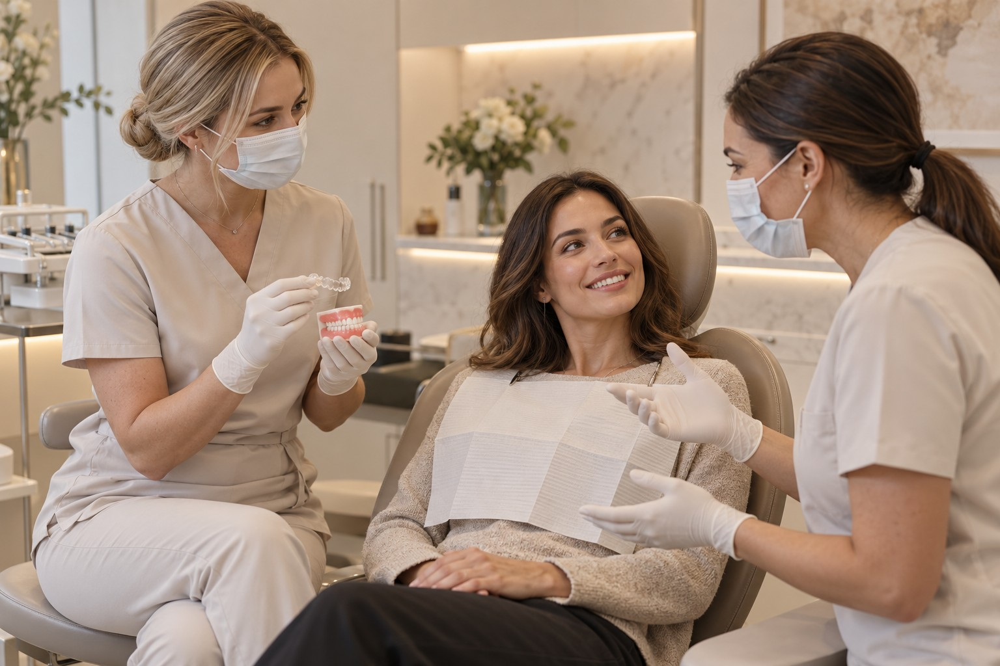
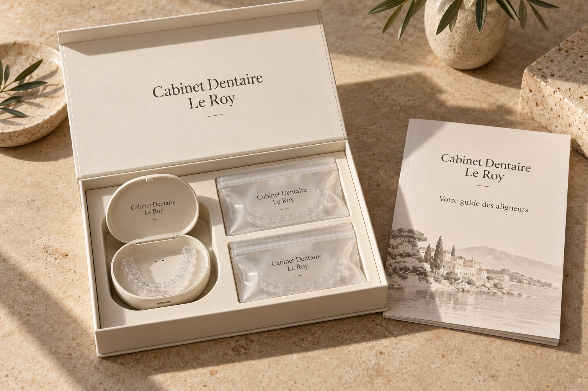

Une présentation harmonisée avec votre marque et vos supports patients.
Offre de fin d’année 2026 · réservée aux praticiens10 traitements par aligneurs
10 traitements par aligneurs
+ 6 journées de formation réparties en 2027.
Préparez le développement de votre offre sous votre propre marque, avec l’accompagnement de Blanche.
9 999 €HT · LE FORFAIT
Découvrir l’offre de fin d’année ↗PDF · 1 page · détails et conditions de la proposition
L’expertise en coulisses. Votre cabinet au premier plan.Vous accompagnez
Vous accompagnez
vos patients.
Nous vous accompagnons.
Développer une activité d’aligneurs demande bien plus qu’un fournisseur. Il faut être visible, organiser le parcours patient, se former et pouvoir échanger sur les situations cliniques.
Blanche réunit ces dimensions dans une solution en marque blanche. Vous restez l’interlocuteur de vos patients et conservez votre identité. Notre équipe vous aide à construire et à faire vivre votre offre, étape après étape.
Explorer notre accompagnement ↗Une solution, six dimensionsDe la première recherche
De la première recherche
au suivi du traitement.
Un accompagnement pensé autour de votre cabinet, de votre équipe et de votre niveau d’expérience.
 01
01Attirer de nouveaux patients
Stratégie de visibilité locale, contenus dédiés aux aligneurs et optimisation du parcours en ligne : nous vous aidons à transformer l’intérêt en demandes de rendez-vous.
En savoir plus ↗ 02
02Affirmer votre propre marque
Nom, univers visuel, supports patients et présence digitale : une offre cohérente avec votre cabinet, portée par votre identité.
En savoir plus ↗ 03
03Former votre équipe
Un parcours de formation pour aborder les étapes clés : sélection des situations, empreintes, lecture du plan, mise en place et organisation du suivi.
En savoir plus ↗ 04
04Construire les plans de traitement
Un appui à la planification et des échanges sur les mouvements envisagés. Vous disposez d’un interlocuteur pour discuter du dossier avant votre validation clinique.
En savoir plus ↗05Fabriquer dans le Sud de la France
La production de vos aligneurs s’appuie sur notre implantation dans le sud de la France, avec une coordination entre le cabinet, la planification et le laboratoire.
En savoir plus ↗
06Vous épauler dans les cas difficiles
Lorsqu’une situation le nécessite, nous organisons un échange clinique et un accompagnement personnalisé. Les modalités d’intervention sont définies selon le dossier.
En savoir plus ↗
CABINET DENTAIRE LE ROY · MARQUE FICTIVEEXEMPLE DE PERSONNALISATION · VISUEL GÉNÉRÉ PAR IA
Votre cabinet signe l’expérienceUne marque qui
Un coffret à votre identité L’essentiel du parcours
Une marque qui
vous ressemble.
Pour vos patients, l’expérience commence chez vous. Blanche vous aide à créer une présentation des aligneurs qui prolonge naturellement l’identité de votre cabinet.
- Identité visuelle et supports de présentation
- Pages dédiées à votre activité d’aligneurs
- Supports d’information pour vos patients
- Personnalisation des éléments convenus ensemble
Votre cabinet
Aligneurs, étui de rangement et guide : composition et personnalisation à convenir.
Un partenaire de proximitéUne expertise ancrée
Une expertise ancrée
dans le sud de la France.
Depuis notre production dans le Sud, nous construisons une relation directe avec les cabinets. L’objectif : faciliter les échanges, coordonner les étapes et vous donner un point d’appui dans le développement de votre activité.
Vous gardez la relation patient, le diagnostic, la prescription et les décisions de traitement.
Une activité à construire.
Ensemble, dès le départ.
Échanger
Nous découvrons votre cabinet, vos objectifs et votre expérience des aligneurs.
Préparer
Nous définissons votre identité, les supports, la formation et le dispositif de visibilité.
Démarrer
Nous accompagnons l’organisation de votre parcours et la préparation des premiers dossiers.
Développer
Nous faisons le point sur les demandes, le parcours patient et vos besoins d’accompagnement.
Vos questionsUne relation claire.
Une relation claire.
Dès le premier échange.
Parlons de votre organisation et du périmètre adapté à votre pratique.
Mes patients voient-ils la marque Blanche ?
L’offre est conçue pour être présentée sous l’identité de votre cabinet. Les éléments personnalisables et les informations obligatoires figurant sur les dispositifs et les documents sont précisés lors de la mise en place.
Comment accompagnez-vous la recherche de patients ?
Nous travaillons sur votre visibilité en ligne, les contenus et le parcours de prise de contact. Le périmètre, le budget et les indicateurs sont définis ensemble. Aucun volume de patients n’est garanti.
Puis-je démarrer si je débute avec les aligneurs ?
Nous commençons par échanger sur votre expérience et vos besoins. La formation et l’accompagnement sont définis en conséquence, avec des dossiers adaptés à vos compétences.
Qui décide du plan de traitement ?
Nous apportons un soutien à la planification et aux échanges cliniques. Le praticien traitant conserve la responsabilité de l’examen, du diagnostic, de la prescription, de la validation du plan et du suivi de ses patients.
Que se passe-t-il en cas de difficulté clinique ?
Vous pouvez solliciter un échange sur le dossier. Selon la situation, un soutien personnalisé peut être organisé ou une orientation vers un professionnel adapté envisagée. Le périmètre est défini au cas par cas.
Quels sont les tarifs et les conditions ?
Une proposition est construite selon la personnalisation, la formation, l’accompagnement, la production et les actions de visibilité retenues. Le détail des prestations et des engagements est formalisé avant le démarrage.
Faisons grandir votre
activité d’aligneurs.
Un premier échange pour comprendre vos ambitions et construire une offre à votre image.